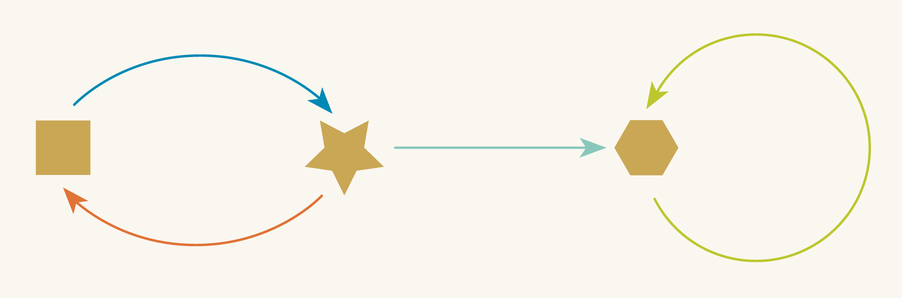

Chapter 0: Directed Graphs#
0.1 What is a directed graph?#
We will begin our journey into relational thinking with AlgebraicJulia by looking at a particularly simple modeling system called a directed graph. Anyone who’s ever used a flow chart, studied a subway map, or learned the Charleston will have encountered the basic idea.

What do these diagrams all have in common? First, they all have arrows. Second, they all have some “points” (players, footprints, questions, etc.), and every arrow connects one point to some other point. More formally these points are usually known as “vertices” (”vertex” when singular), and the official rules for directed graphs are:

It’s a simple setup but many situations in life - many systems - are well-captured by this kind of diagram.
Consider how we can use directed graphs to represent the following three situations:
Mythological Romance
Aphrodite loves Adonis and Adonis loves Aphrodite. But Adonis is polyamorous and is also in love with Narcissus. And Narcissus, of course, loves only himself.
We can make a directed graph of these relationships in which the vertices are characters and an arrow indicates that the person at the source loves the person at the target.

Ski Trip Brochure:
From our ski lodge, you can take the lift to the top of the mountain. Skiing down the slope will take you to an isolated Alpine village in a valley where you can cross-country ski around the surrounding landscape. Of course, some people don’t know how to ski. If that sounds like you, don’t worry! You can still visit the mountain top to see the beautiful view and then just jump back on the lift and return to the lodge.
In this directed graph, the vertices are locations and the arrows are “modes of transport” from one location to another.

If you squint, you can look at this like a simplified map. We’ve left out the trees and the geography and the distances from one place to another. We’ve distilled our wayfinding to only the most essential details needed for getting around.
Whose Turn Is It To Do the Dishes?
Paul and his wife Toni used to trade off doing the dishes each day. Then their friend Tuco moved in who loves doing dishes and he has done them ever since. Toni was the last one to do the dishes before Tuco took over.
In this directed graph, the vertices are once again people and each arrow connects two people who may do dishes on consecutive days.

Looked at individually each of the above situations seem quite different. But their directed graphs make it clear that they all share the same essential structure. Abstractly, they are all the same graph, which we can represent in unlabeled form:

When used casually like this, directed graphs are little more than convenient pictures–visual heuristics that make it easier to think about the underlying situations. But directed graphs are also a powerful formal tool, something we can be communicated to a computer. Over the course of this book we will unpack the details of AlgebraicJulia through an extended look at directed graphs and related ideas.
0.2 Why directed graphs?#
Having established what a directed graph is we will now want to do things to directed graphs, expanding our repertoire of tools for graph manipulation.
When working with directed graphs in practice we readily find a variety of manipulations and comparisons that would be convenient to perform. If we’ve modeled some situation and then our understanding of that situation changes we’ll want to update the details of our graph to reflect this improved understanding, adding and deleting components as necessary. Informally, we can easily do this easily on a whiteboard or with pencil and paper. The problem is, there’s nothing to stop us from writing nonsense. ///MUTANT GRAPH IMAGE
Broken models and the DANGLING EDGE conditionIf we’re trying to represent the world with a directed graph then a broken graph is a problem because it invalidates the underlying model. It’s not that the model becomes incorrect. It becomes meaningless. If “loves” needs both a lover and a beloved then the following is an undefined/ungrammatical…”Tuco loves” Rupturing our graph in this way also ruptures any underlying meaning the graph may have had—A “ruptured” graph is one that is suffering from a DANGLING EDGE CONDITION
The difficulties of a computerWhen used casually like this, directed graphs are little more than convenient pictures–visual heuristics that help us to think about the underlying situations. When used casually like this, directed graphs are little more than convenient pictures–visual heuristics that help us to think about the underlying situations. Things get even worse when we try to enter these things into the computer because we now have to work formally instead of casually.The burden of formality. In order to work with graphs at the level of detail needed for a computer there will be lots of rules and conditions that need to be adhered to As we do more intricate thing: merging graphs, separating subgraphs, performing surgeryin order to avoid the dangling edge condition.If we have the ability to manipulate our graphs then we also have the ability to break them.
An elegant solution - building up to DPOsIn this book we will show an elegant way to deal with this problem If you try to write computer programs about directed graphs entirely in terms of their arrows and vertices then it’s going to be a real pain in the ass to manipulate them without breaking the dangling edge condition. With Algebraic Julia, we instead try to think about the relationships between arrows and vertices as the things we think about. We will pursue this strategy and some length, and much of it will seem unnecessarily abstract at first. But in the end, we will arrive at the concept of a “Double Pushout Rewrite Rule,” a category theoretic design pattern that allows us to perform intricate surgery on graphs without having to worry about the dangling edge condition.5. Relational thinkingIn the process, and with the help of Algebraic Julia, you will learn new tools for thinking about relationships. The real goal of this book is to give you a taste of what we’re calling “relational thinking.” This is a style of thinking that tries to narrow down to a solution from the space of sensible structures by methodically reflecting on “what” it is that we’re looking for rather than focusing on “how” to construct a solution and verify that the construction will always produce a sensible structure.
Conclusion - Enoy!Graphs are a good example - simple! - but not representative of everything AJ can do. AJ is being developed to be a serious scientific modeling platform. part of that future is helping people get the hang of how to think about things with algebraic juliaBut in order to use AJ effectively you need to have some sense of the way to organize your thoughts on that platform. This is your introduction!
The problem is that these tools exist at a level of abstraction that people are simply not accustomed to thinking about.